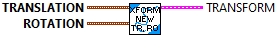
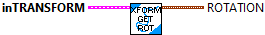
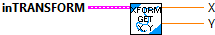

Constructs the transform that maps the initial pose to the final pose.
This routine rotates the difference between the translations using a clockwise rotation matrix. This transforms the global delta into a local delta (relative to the initial pose).
Parameters:
- initial - The initial pose for the transformation.
- last - The final pose for the transformation.
Returns:
- Transform - The TRANSFORM data structure

Constructs a transform with the given translation and rotation components.
Parameters:
- translation -Translational component of the transform.
- rotation - Rotational component of the transform.
Result:
- transform - TRANSFORM data structure

Dividesthe transform by the scalar.
Parameters:
- IN TRANSFORM - This TRANSFORM data structure
- SCALAR - The scalar value to divide the transform by
Results:
- OUT TRANSFORM - The multiplied transform data structure

Checks equality between this Transform2d and another object.
Parameters:
- IN TRANSFORM - This TRANSFORM data structure
- OTHER TRANSFORM - The other TRANSFORM to compare
Results:
- EQUALS - Returns TRUE when both TRANSFORMs are the same.

Returns the rotational component of the transformation.
Parameters:
- IN TRANSFORM - The TRANSFORM data structure
Returns:
- ROTATION - The rotational component of the transform.

Returns the translation component of the transformation.
Parameters:
- IN TRANSFORM - THis TRANSFORM data structure
Returns:
- TRANSLATION - The translational component of the transform.

Returns the X, Y elements of the translation component of the transformation.
Parameters:
- IN TRANSFORM - THis TRANSFORM data structure
Returns:
- X - The X element of the translational component of the transform.
- Y - The Y element of the translational component of the transform.

Returns the X, Y, angle elements of the translation component of the transformation.
Parameters:
- IN TRANSFORM - THis TRANSFORM data structure
Returns:
- X - The X element of the translational component of the transform.
- Y - The Y element of the translational component of the transform.
- angle - The angle element of the translational component of the transform.

Invert the transformation. This is useful for undoing a transformation.
Parameters:
- IN TRANSFORM - This TRANSFORM data structure
Results:
- OUT TRANSFORM - The inverted transformation.

Composes two transformations.
Parameters:
- IN TRANSFORM - This TRANSFORM data structure
- other Transform -- The transform to compose with this one.
Results:
- OUT TRANSFORM - The composition of the two transformations.

Scales the transform by the scalar.
Parameters:
- IN TRANSFORM - This TRANSFORM data structure
- SCALAR - The scalar value to multiply the transform by
Results:
- OUT TRANSFORM - The multiplied transform data structure